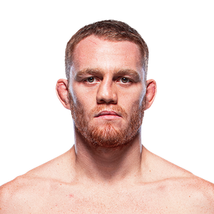

Jack Della Maddalena es un peleador profesional de artes marciales mixtas (MMA) originario de Australia y uno de los talentos más destacados de la división de peso wélter de la UFC. Nació el 10 de septiembre de 1996 en Perth, Australia. Desde joven mostró interés por los deportes de combate y comenzó entrenando boxeo a los 14 años. Con el paso del tiempo amplió su entrenamiento hacia las artes marciales mixtas, desarrollando un estilo muy técnico basado en el striking, el control de distancia y una gran precisión en sus golpes. Della Maddalena se hizo conocido en el circuito regional australiano gracias a su impresionante racha de victorias y finalizaciones por nocaut. Su talento llamó la atención de los reclutadores de la UFC, lo que le permitió participar en el programa Dana White’s Contender Series, donde logró una victoria dominante que le abrió las puertas para firmar con la organización más importante del mundo en MMA.

Durante su carrera profesional, Jack Della Maddalena ha destacado especialmente por su habilidad en el combate de pie. Su estilo está muy influenciado por el boxeo moderno, con combinaciones rápidas, excelente defensa y un gran control del ritmo de pelea. Además, ha demostrado una notable capacidad para finalizar combates, acumulando varias victorias por nocaut técnico o sumisión. En la UFC rápidamente se posicionó como uno de los prospectos más peligrosos de la división de peso wélter. Sus actuaciones dominantes y su estilo agresivo pero técnico lo han convertido en uno de los peleadores más emocionantes para los aficionados del MMA.
Dentro de las artes marciales mixtas compite principalmente en la siguiente categoría:
Jack Della Maddalena es reconocido por varias cualidades dentro del octágono:
Gracias a su disciplina, dedicación y talento natural para el combate, Jack Della Maddalena se ha consolidado como uno de los peleadores más prometedores de la UFC. Muchos analistas consideran que tiene el potencial para competir por el título mundial de peso wélter en el futuro.
El estilo de pelea de Jack Della Maddalena se caracteriza principalmente por su striking técnico, basado en el boxeo. Utiliza combinaciones rápidas, desplazamientos inteligentes y un excelente control de distancia para dominar a sus oponentes. Aunque su especialidad es el combate de pie, también ha trabajado su defensa de derribos y su juego en el suelo para ser un peleador más completo dentro del MMA moderno.
Otros peleadores que podrían interesarte: